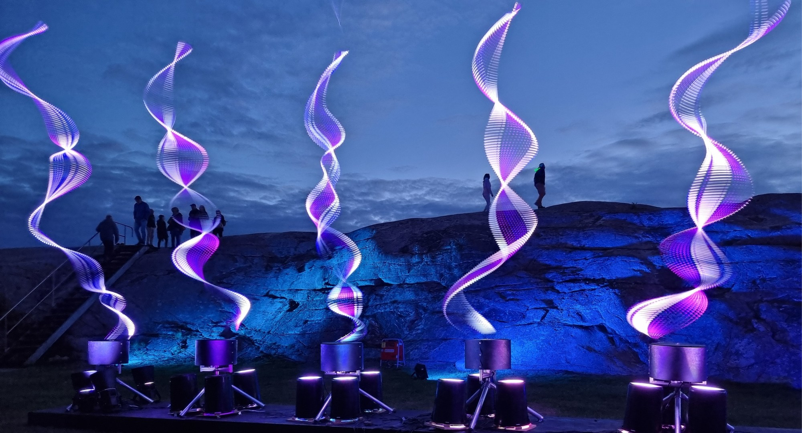
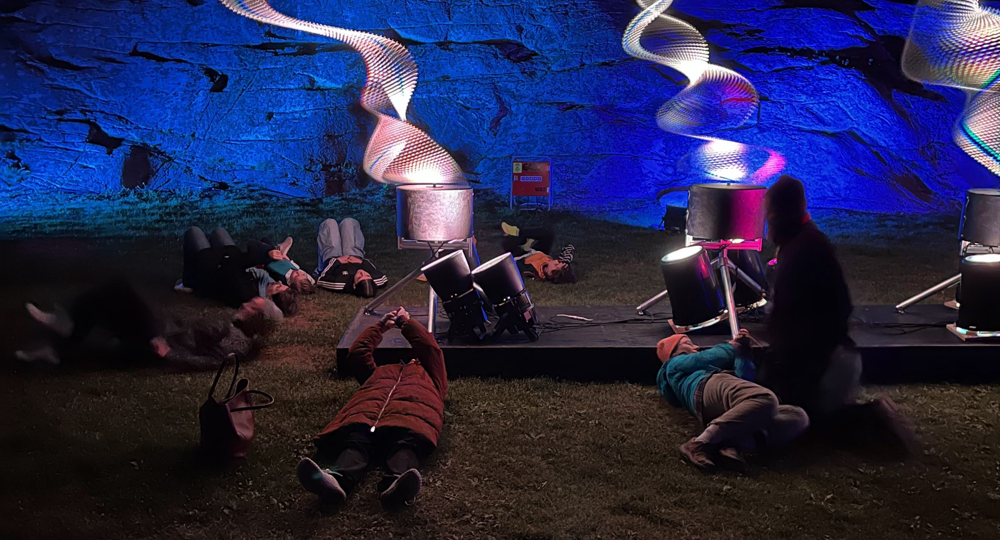

Bookery Gallerie presents
20 Church Street, NW8 8EP
Nearest underground stations: Marylebone and Edgeware Road,
Bus 139 from Oxford Street, 16 from Victoria
Iona Scott will talk about her work Discosphaera.
Discosphaera Tubifera is a type of phytoplankton - incredible tiny lifeforms, invisible to the human eye and yet responsible for producing approximately 50% of the oxygen on our planet.
Through her Plankton Light Sculptures, which are linked to a virtual representation of their magical world, Iona Scott invites you to learn more about the importance of phytoplankton through visual and sensory experiences, guiding you on a seamless and mesmerising journey from our world, through the threshold, into the submarine realm.

Paul Friedlander will talk about his recent shows
in England and Sweden.
You will see glimpses of wild party goings on at the Warm Up festival in a not so wild forest in Hertfordshire, the famed Shambala festival at its secret site in the midlands, a beautiful Island of Light off the wild west coast of Sweden and the art museum in Boras, a city otherwise known for its textile industry close to Göteborg.
He will end with a performance of hand held colour light waves.
There will be time for questions and answers afterwards.
